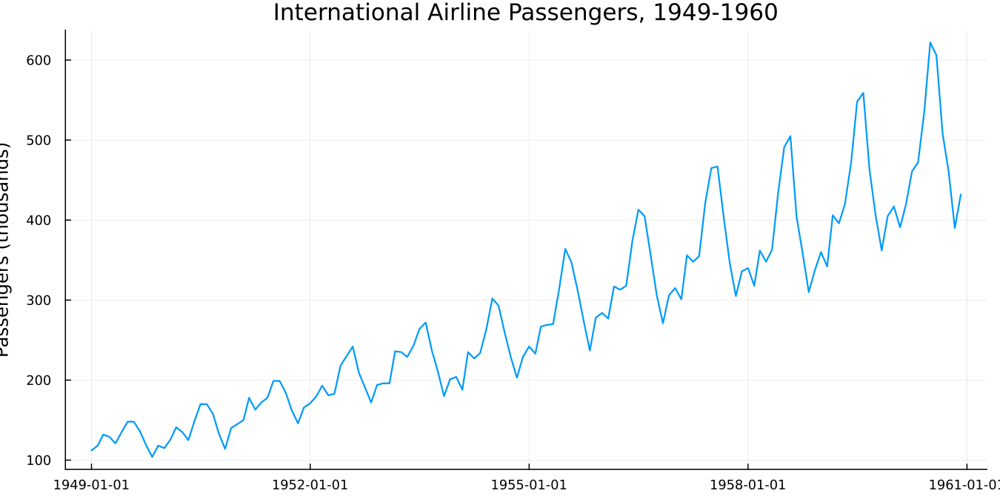
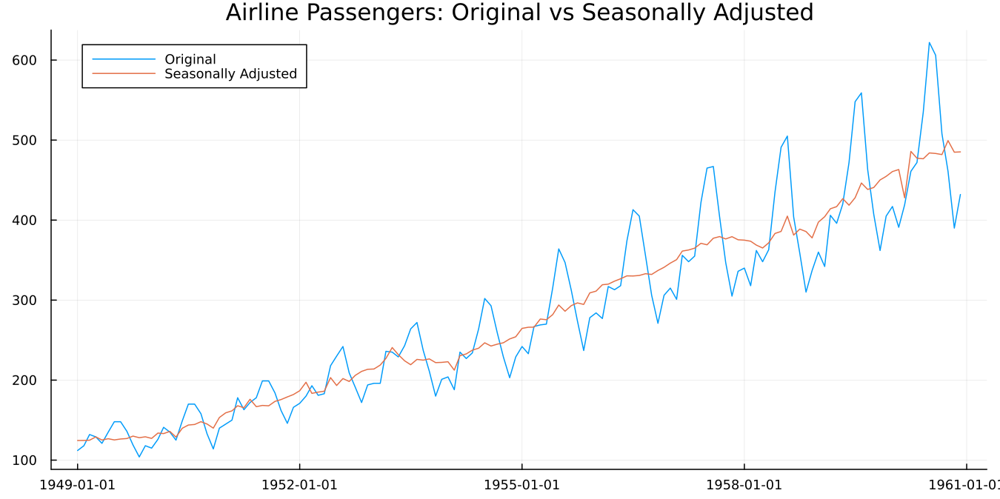
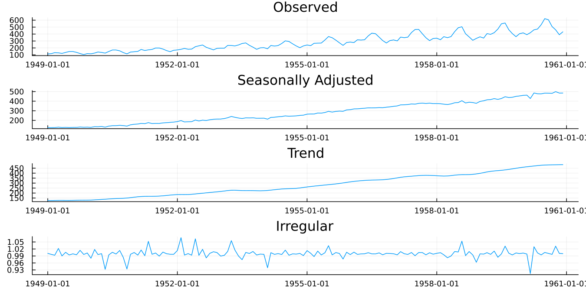

Getting Started
Every example below was actually run, not just written and assumed correct — the pure-Julia ones (calendars, spec construction, bundled datasets) are live jldoctest blocks Documenter re-verifies on every docs build; the ones that call the real binary were confirmed directly against it during development but are shown as plain code blocks rather than live doctests, since running the actual x13prebuilt binary isn't something every environment that might build these docs can do. Every concrete number quoted on this page was independently re-verified against a real run this session, not copied from a draft without checking.
1. Installation and first check
using Pkg
Pkg.add("SeasonalAdjustment")That is the whole installation. There is no second step.
This is worth pausing on: the X-13ARIMA-SEATS binary itself does not need a separate download, a PATH entry, or a location passed to every call. SeasonalAdjustment.jl ships the binary as a Julia artifact, resolved for your platform when it's first needed. Linux, macOS and Windows are all covered. Nothing is placed on your PATH, nothing is installed system-wide, and different Julia environments can hold different versions without interfering.
Checking it works
using SeasonalAdjustment
x13_binary_available()truex13_binary_available resolves the binary for your platform and then actually invokes it. It returns false rather than throwing, so it's safe to use as a guard in scripts and test suites.
If you want the path itself, x13_binary_path resolves it (the exact value is platform-dependent, so not reproduced here) — the path differs by platform in a way that's worth knowing about only if something goes wrong. On Linux the executable sits at the artifact root. On Windows it's inside an x13ashtml/ subdirectory. On macOS it's at x13ashtml/bin/x13ashtml and is dynamically linked against three libraries in a sibling lib/ directory, which x13_binary_path checks for and reports clearly if they're missing.
If the check fails
x13_binary_available() returning false means one of two things.
The artifact didn't resolve for your platform. This happens on platforms outside the prebuilt set, most often unusual Linux architectures. There is no workaround inside the package; you'd need to build X-13 from the Census Bureau's Fortran source and point the package at it through run_x13's binary_path keyword.
Or the artifact resolved but the binary wouldn't run. On macOS this is usually the missing-library case above, and the error message names the specific file. Clearing the artifact cache and reinstalling fixes most instances.
What you have just installed
The binary is x13ashtml, built from the U.S. Census Bureau's own source. It's the program national statistical offices run in production.
This matters for a reason that will come up repeatedly. SeasonalAdjustment.jl does not reimplement seasonal adjustment. It builds a specification file, runs the Census binary, and parses what comes back into Julia types. When you compare results against a statistical office's published figures, you're comparing against the same computation, not an independent one that happens to agree.
2. Your first adjustment
The series
The package ships a few datasets, so nothing in this guide depends on data you have to find first.
julia> using SeasonalAdjustment
julia> datasets()
4-element Vector{String}:
"airline"
"appliance"
"appliance_q"
"iip_india"We want the first one.
julia> using SeasonalAdjustment
julia> d = dataset("airline");
julia> length(d.value), first(d.date), last(d.date)
(144, Dates.Date("1949-01-01"), Dates.Date("1960-12-01"))Monthly totals of international airline passengers, January 1949 to December 1960, in thousands. Box and Jenkins used it in Time Series Analysis: Forecasting and Control and it's been the standard example ever since. It appears throughout the seasonal adjustment literature and in this package's own verification corpus. If you've read anything at all about seasonal adjustment, you've seen this series.
Where it came from, and whether you may republish a chart of it:
dataset_info("airline")International airline passengers ("airline")
Source: Box & Jenkins (1976), Series G
Licence: Public domain
Kind: published
Frequency: 12 (monthly)
N: 144
Span: 1949-01-01 .. 1960-12-01
Units: thousands of passengers
Citation: Box, G.E.P. and Jenkins, G.M. (1976). Time Series
Analysis: Forecasting and Control. Holden-Day. Series G.Every dataset carries its source, licence and citation. That's deliberate: a figure in a paper needs an attribution line, and guessing at one is worse than looking it up. iip_india is the one exception worth knowing about up front — its own dataset_info says plainly that its exact redistribution terms weren't independently re-verified when it was bundled, so check dataset_info("iip_india") before republishing anything built from it.
dataset returns a NamedTuple of date and value, which happens to be a valid Tables.jl table. So if you'd rather have something else:
using DataFrames
dataset("airline", DataFrame)Any Tables.jl sink works: DataFrame, TSFrame, Tables.rowtable, Tables.matrix, or anything else that accepts a table.
The airline series is a good first example because everything it does, it does clearly.

Figure 2.1. Two things are visible immediately. The series trends upward, roughly doubling and then doubling again. And within each year there's a repeating shape, peaking in summer, with a smaller bump in December. The yearly shape is not constant in size: the summer peak in 1960 is far larger in absolute terms than the one in 1949.
That last point turns out to matter, and section 4 returns to it.
Adjusting it
res = x13(dataset("airline"))One call, and no start argument. The dataset carries its dates, and x13 reads them to work out that the series begins in January
For your own data you'd say so explicitly:
res = x13(y; start = (1949, 1)) # y a plain Vector, monthly
res = x13(y; start = (1990, 1), period = 4) # quarterlyThe result is an X13Result. Four series come back, each a field:
| Field | X-11 table | What it is |
|---|---|---|
seasonally_adjusted | D11 | the series with the seasonal pattern removed |
trend | D12 | the smooth underlying trend-cycle |
seasonal_factors | D10 | the estimated seasonal pattern itself |
irregular | D13 | what's left over |
Plus residuals from the regARIMA model, and udg, the binary's own diagnostics dump, which section 3 uses heavily.
The X-11 table names in that middle column will keep appearing. They are how the X-13 documentation and every statistical office refer to these series, so the package keeps them visible rather than hiding them behind Julia names alone.
Looking at it
plot(res)
Figure 2.2. The original series and the adjusted one, overlaid. The summer peaks and winter troughs are gone. What remains still rises, and still wobbles, but the wobbles are no longer the calendar.
This is the chart to look at first, every time. If the adjusted line doesn't look like a sensible version of the original with the yearly rhythm taken out, nothing further is worth checking.
For the components separately:
plot(res; panels = :components)
Figure 2.3. Observed, seasonally adjusted, trend, and irregular. The trend panel is the adjusted series smoothed further. The irregular panel is what neither the trend nor the seasonal pattern explains, and on a well-behaved series it should look like noise around 1.0.
What actually happened — and what this bare call did not do
It's tempting to assume the single call above did everything X-13 can do automatically: tested the transform, searched for an ARIMA model, checked for outliers. It didn't — and checking that honestly is a better first lesson than assuming it.
transformfunction(res), arima_model(res)(:none, "(0 0 0)")No transform was tested (transformfunction returns :none, not because X-13 tried logs and rejected them, but because nothing was asked for), and no real ARIMA model was fit — (0 0 0) is X-13's own trivial fallback when neither an explicit model nor automdl is requested. The adjustment in Figures 2.2–2.3 still ran (X-11's own filtering doesn't need a fitted regARIMA model to decompose a series), but this bare call is the "nothing turned on" baseline, not the "X-13 doing its usual automatic work" case.
filters(res)(seasonal_ma = ["MSR", "MSR", "MSR", "MSR", "MSR", "MSR", "MSR", "MSR", "MSR", "MSR", "MSR", "MSR"],
trend_ma = 9, mode = nothing, sa_mode = "multiplicative seasonal adjustment", unit_root = nothing)filters reports the seasonal moving average X-11 chose for each calendar month (its own default, MSR, here), the trend filter length, and the decomposition mode — X-11 still defaults to a multiplicative decomposition even though no transform was tested at the regARIMA stage; the two are separate choices. X-11 selects these from properties of the data rather than applying fixed defaults, and section 4 shows how to override them.
And the whole specification at once:
static(res)static resolves every automatic decision into an explicit specification — here, since nothing was automatic to begin with, it mostly just echoes the bare defaults back (arima_model="(0 0 0)", transform left at :none, no outliers to list). It becomes genuinely useful once automatic selection is actually turned on, which is where section 3 picks up.
Before moving on
You have an adjusted series and you have not yet checked a single thing about whether it's any good — and, as the section above shows, you haven't yet asked X-13 to do its usual automatic work either. That's the subject of the next section, and it's not optional. Seasonal adjustment fails quietly. A bad adjustment produces a smooth, plausible-looking line that happens to be wrong, and nothing about Figure 2.2 would tell you.
3. Was it any good?
Seasonal adjustment fails quietly. There's no error, no warning, no obviously wrong number. You get a smooth line that looks like an adjusted series, and it may be wrong in ways that matter.
So there's a battery of diagnostics, and it's unusually large compared with most statistical procedures. This section runs the five checks worth making every time, in the order worth making them — against a fuller specification than section 2's bare call, one that actually lets X-13 make its usual automatic choices:
res = x13(dataset("airline");
automdl = true,
outlier = true,
aictest = [:td, :easter],
transform = :auto)This is the specification behind every verified number in this section and the next.
Check 1: does the seasonal pattern look sensible?
monthplot(res)
Figure 3.1. Twelve bands, one per calendar month. The thick horizontal bar in each band is the estimated seasonal factor. The vertical stems are the SI ratios, which are what the data actually showed in each individual year before smoothing.
Read it this way. The bars tell you the shape of the average year: July and August well above 1.0, February well below. The stems tell you how much year-to-year variation the bar is smoothing through. Tight stems mean a stable seasonal pattern that's easy to estimate. Widely scattered stems mean the pattern is moving, and the single bar is a compromise.
The stems drifting steadily in one direction within a band is the signal to watch for. It means that month's seasonal effect is changing over time, and a single factor is hiding a trend.
Check 2: is there seasonality left?
The point of the exercise is to remove the seasonal pattern. The QS test asks whether any remains.
qs(res)| Series | QS statistic | p-value |
|---|---|---|
| original | 167.65 | 0.000 |
| seasonally adjusted | 0.00 | 1.000 |
That's the pattern to want. Strong, highly significant seasonality in the input. None detectable in the output.
The failure mode is a significant QS on the adjusted series. It means the procedure didn't get everything, and the adjusted figures still contain a calendar rhythm. On monthly economic data that's a publication-blocking result at most statistical offices.
Check 3: the M statistics
X-11 produces eleven summary statistics, M1 to M11, and combines them into an overall Q. Each M targets a different way an adjustment can go wrong: too much irregular relative to trend, seasonal factors moving too fast, and so on.
The convention is simple. Below 1.0 passes. Above 1.0 fails.
m = mstats(res)
m.q, m.m7, m.fail(0.20, 0.203, 0)Q of 0.20 against a threshold of 1.0 is a comfortable pass. fail is the count of individual M statistics that exceeded 1.0, and zero is what you want.
M7 deserves separate attention. It tests whether identifiable seasonality is present at all, and it's the one most practitioners quote. An M7 above 1.0 is often taken to mean the series shouldn't be seasonally adjusted, because there's not enough stable seasonality there to remove. At 0.203, this series has plenty.
mstats returns all eleven plus q, qm2 and fail. It returns nothing for a SEATS run, since the M statistics are specific to X-11.
Check 4: spectral peaks
A seasonal pattern in monthly data shows up as peaks at particular frequencies. If those peaks are still in the adjusted series, seasonality survived.
spectrumplot(res; series = :sa)
Figure 3.2. The spectrum of the adjusted series, with vertical markers at any seasonal or trading-day frequency X-13 flagged as a visually significant peak. A clean adjustment has no markers at the seasonal frequencies.
For a summary rather than a picture:
spectral_peaks(res)spectral_peaks tells you which series show peaks. spectrum_peaks (singular spectrum, note) tells you at which frequency, which is the finer information the plot uses.
A trading-day peak is a different message from a seasonal one. It says the series responds to the day-of-week composition of the month, and section 4 shows how to model it.
Check 5: is the model adequate?
The regARIMA model at the front of the pipeline has its own diagnostics, and they're ordinary time series diagnostics.
residplot(res)
Figure 3.3. Residuals against time, with a zero reference line. You are looking for something that resembles noise: no drift, no fanning out, no runs of same-signed values.
d = residual_diagnostics(res)
d.durbin_watson, d.skewness, d.kurtosis(1.9504, 0.0900, 3.0698)Durbin-Watson near 2.0 indicates no first-order residual autocorrelation. Skewness near 0 and kurtosis near 3 are what a normal distribution gives, so these residuals are close to normal.
d.ljung_box is the full lag-indexed table rather than a single number, because the underlying diagnostic is computed at several lags and the answer can differ between them.
The checklist
| Check | Function | Want |
|---|---|---|
| Sensible seasonal pattern | monthplot | tight stems, no drift within a band |
| Seasonality removed | qs | significant on original, not on adjusted |
| Overall quality | mstats | Q below 1.0, fail of 0 |
| No residual seasonality | spectral_peaks | no seasonal peak in :sa |
| Model adequate | residual_diagnostics | DW near 2, no Ljung-Box rejection |
Two more exist and are worth knowing about even though they're beyond this guide. seasonality_tests gives the stable and moving seasonality F-tests and the identifiable-seasonality verdict. slidingspans/revision_history ask a different question again: not whether the adjustment is right today, but whether it will still look like this next month (see section 5).
When a check fails
Do not reach for a different method. Reach for the specification.
A failed QS on the adjusted series, or a seasonal spectral peak, usually means the model in front of the filter is missing something. An outlier, a calendar effect, a level shift. Those are section 4.
4. When the defaults aren't enough
Three settings account for most of what you'll ever change. This section takes them one at a time and then puts them together.
Multiplicative or additive
Look again at Figure 2.1. The summer peak in 1960 is much larger in absolute terms than the one in 1949. But as a proportion of that year's level, the two are similar. July is roughly 20% above the year's average in both.
That distinction is the whole question. When the seasonal swing grows with the level of the series, the pattern is multiplicative and the model belongs in logs. When the swing stays a constant number of units regardless of level, it's additive.
X-13 tests this for you when asked (transform = :auto, as in section 3's res):
transformfunction(res):logLog, meaning multiplicative. To see why it matters, force the other choice:
d = dataset("airline")
res_log = x13(d; transform = :log)
res_none = x13(d; transform = :none)
Figure 4.1. The two adjusted series, and their difference. Early in the sample they're close. Late in the sample, where the seasonal swing is largest, they separate. The additive version removes a constant-sized summer effect from years where the actual effect was much larger, and leaves visible seasonality behind.
Leave transform at its default unless you have a reason. The reasons that do come up: a series containing zero or negative values cannot be logged, and X-13 will pick :none for you; and if you're comparing across a series break or reproducing someone else's published figures, you may need to pin the choice rather than let it be re-tested each period.
Outliers
A strike, a policy change, a pandemic. A single unusual observation distorts the estimated seasonal pattern for that calendar month in every year, because the seasonal factor for July is estimated from all the Julys.
Detection is off by default:
res = x13(dataset("airline"); outlier = true)
outliers(res)On the airline series with the fuller specification above, one is found:
| label | type | year | period |
|---|---|---|---|
AO1951.May | :ao | 1951 | 5 |
An additive outlier in May 1951, one month, no lasting effect.
Worth noticing: the values around it are 163, 172, 178. Nothing about that looks unusual. Detection works on regARIMA residuals after differencing, not on levels, so it finds things the eye does not.
plot(res; outliers = true)
outlier_counts(res)
Figure 4.2. The adjustment with the detected outlier marked.
Three types are detected automatically. An additive outlier (AO) is a single odd observation. A level shift (LS) is a permanent step to a new level. A temporary change (TC) is a jump that decays back. outlier_counts gives how many of each were found.
One caution that applies everywhere and is easy to forget. Automatic detection near the end of a series is unreliable, because there isn't yet enough data after the event to distinguish a temporary blip from a permanent shift. A level shift detected in the most recent few months should be treated as provisional.
Calendar effects
Months contain different numbers of Mondays. A series driven by business activity will be higher in a month with five Mondays than one with four, and this has nothing to do with the season.
res = x13(dataset("airline"); trading = true, transform = :log)Or let X-13 decide whether the effect is there at all:
res = x13(dataset("airline"); aictest = [:td, :easter], transform = :auto)aictest fits the regressors, compares information criteria with and without, and keeps them only if they earn their place. On the airline series both are kept, and the trading-day F-test is emphatic:
F(1, 128) = 31.06, p = 1.4e-7Easter is the other built-in worth knowing. It moves between March and April, so its effect splits across two months in a way that changes every year, and a fixed seasonal factor cannot absorb it. Easter[1] in the output means a one-day window before Easter Sunday.
X-13 has built-in regressors for Easter, Labor Day and Thanksgiving. All three are US holidays. For Diwali, Chinese New Year, Eid, or anything else, this package provides custom_holiday_regressor and a calendar layer; section 5 points the way.
Choosing the ARIMA model
X-13 can search for the model rather than being told one:
res = x13(dataset("airline"); automdl = true, transform = :auto)
arima_model(res)"(0 1 1)(0 1 1)"This is worth a remark. (0 1 1)(0 1 1) is the model Box and Jenkins fitted to this series by hand in 1970. It's so closely associated with it that the specification is called the airline model, and it remains the default starting point for monthly economic series across the profession. X-13's automatic procedure arrives at it independently.
To see what it considered and rejected:
fivebestmdl(res)5-element Vector{@NamedTuple{model::String, bic::Float64}}:
(model = "(0 1 0)(0 1 1)", bic = -4.007)
(model = "(1 1 1)(0 1 1)", bic = -3.986)
(model = "(0 1 1)(0 1 1)", bic = -3.979)
(model = "(1 1 0)(0 1 1)", bic = -3.977)
(model = "(0 1 2)(0 1 1)", bic = -3.97)fivebestmdl returns the five best candidates with their BIC values, in rank order. Useful when the chosen model surprises you (notice (0 1 1)(0 1 1) isn't even the top BIC here — automdl weighs more than raw BIC when picking among close candidates), and useful for judging how decisive the choice was: five candidates within a hair of each other means the selection is close to arbitrary.
If all you want is the order, without the adjustment:
select_order(dataset("airline"))(order = (3, 1, 1), seasonal_order = (0, 1, 1, 12), transform = :none)Note this is a different model from the one above — select_order runs automdl on its own, with no aictest/transform requested, so it searches under different conditions than section 3's fuller res.
Putting it together
res = x13(dataset("airline");
automdl = true,
outlier = true,
aictest = [:td, :easter],
transform = :auto)This is the specification behind every verified number in this guide (the same one section 3 introduced).
The diagnostics, all independently verified against this exact call:
| Diagnostic | Value | Verdict |
|---|---|---|
| Transform | Log(y) | multiplicative |
| ARIMA model | (0 1 1)(0 1 1) | the airline model |
| Q | 0.20 | pass |
| M7 | 0.203 | identifiable seasonality |
| Failed M statistics | 0 | pass |
| QS, original | 167.65, p = 0.000 | seasonality present |
| QS, adjusted | 0.00, p = 1.000 | seasonality removed |
| Durbin-Watson | 1.95 | no residual autocorrelation |
| Outliers found | 1 (AO, May 1951) |
Freezing the result
Automatic selection is convenient during exploration and a liability in production. Next month's data may change the chosen model, and your published figures will move for reasons that have nothing to do with the economy.
frozen = static(res)static returns a specification with every automatic choice resolved: the ARIMA order fixed, detected outliers listed explicitly, the transform pinned. Run that specification from then on and the model stops moving underneath you.
One caveat the docstring covers and is worth repeating. Re-running a frozen specification reproduces the original to about six significant figures, not bit-identically, because estimation converges slightly differently when a model is given rather than searched for. Compare with isapprox, not ==.
Everything else
These settings cover most cases. The rest of what X-13 can do runs to 280 pages of Census Bureau documentation.
Some of it is reachable through named keywords, and the API reference lists them. Anything without a named keyword goes through spec_args, which passes raw "block.argument" pairs straight to the specification file:
res = x13(dataset("airline");
spec_args = Dict("forecast.maxlead" => "12"))That escape hatch means the package never blocks you from something X-13 can do.
5. Where to go next
What you can do now
Adjust a monthly or quarterly series, look at the result, run the five checks that matter, and change the settings that come up most. That covers a large share of routine work.
The other document
API Reference is the authority on signatures, keywords, defaults and known gaps. Every function named in this guide has an entry there with more detail than this guide gives, deliberately. When you want to know what a keyword accepts, go there and not here.
Things this guide did not cover
The other datasets. appliance is the Census Bureau's own worked example from the X-13 manual, a US retail series with a strong December peak and a real trading-day effect. Its seasonal shape is completely unlike the airline series, which makes it a good second thing to try.
res = x13(dataset("appliance"); aictest = [:td, :easter], transform = :auto)Quarterly data. Everything here works with period = 4. Dates, tick labels and diagnostics all follow.
res = x13(dataset("appliance_q"); period = 4, seasonal_order = (0, 1, 1, 4))SEATS. X-13 contains a second, quite different adjustment engine, based on decomposing a fitted ARIMA model rather than filtering. x13(d; seats = true) switches to it. The M statistics don't apply; the other diagnostics do.
Calendar effects outside the US. X-13's built-in moving holidays are Easter, Labor Day and Thanksgiving. This package adds a calendar layer and custom_holiday_regressor for anything else. The India NSE calendar ships as INDIA_NSE, Diwali is the worked example (it moves between October and November, so no fixed seasonal factor can absorb it), and dataset("iip_india") — India's real monthly Index of Industrial Production, with a genuine COVID level shift — is a real series to try it against:
julia> using SeasonalAdjustment, Dates
julia> isholiday(INDIA_NSE, Date(2025, 10, 21)) # Diwali-Laxmi Pujan 2025
true
julia> custom_holiday_regressor(Date(2025, 9, 1), Date(2025, 12, 31), INDIA_NSE,
year -> year == 2025 ? Date(2025, 10, 21) : nothing)
4-element Vector{Float64}:
0.0
1.0
0.0
0.0Forecasts and missing values. The regARIMA model produces forecasts and prediction intervals, not just the extension X-11 uses internally, and x13 can interpolate a missing value rather than requiring a clean series:
f = forecast(res; level = 0.95) # (dates=, point=, lower=, upper=)
x13(y; missing_action = :x13) # interpolates via a regARIMA estimateComponent-factor time paths and model diagnostics beyond the five checks. components gives a regression effect's own month-by-month factor (the Diwali coefficient's actual shape, not just its estimate); StatsAPI.vcov/StatsBase.coeftable give the regression/ARIMA coefficient covariance matrix and a full coefficient table; slidingspans/revision_history ask whether an adjustment will still look the same next month. Five more plot recipes — seasonalplot, forecastplot, residdiagplot, componentplot, spanplot — cover these visually; see the API reference.
force/seasonalma. Forcing seasonally adjusted annual totals to match the original series, and pinning a specific seasonal moving-average filter instead of X-11's own choice:
x13(y; force = :denton)
x13(y; seasonalma = :s3x9)Many series at once. generate_specs and run_x13_batch run a panel in parallel. Datasets broadcast, so a quick comparison is one line:
results = x13.(dataset.(["airline", "appliance"]))Other output tables. The four component series are four of 281 tables X-13 can write. series fetches any of them, re-running automatically if the table wasn't saved the first time.
The full HTML report. open_output opens the binary's own output in your browser, which is where the exhaustive detail lives.
Migration. import_spc reads an existing .spc file, so specs from other X-13 tooling come across without hand-translation.
Reading beyond the documentation
The X-13ARIMA-SEATS Reference Manual from the Census Bureau is the authoritative source on every specification and every option. Chapter 7 is the per-spec reference and Appendix B lists the output tables.
**Ladiray and Quenneville, *Seasonal Adjustment with the X-11 Method*** (2001) is the book on X-11 itself, table by table. It predates X-12, so it covers neither regARIMA nor SEATS, but nothing else explains the filtering at that resolution.
**Dagum and Bianconcini, *Seasonal Adjustment Methods and Real Time Trend-Cycle Estimation*** (2016) is the modern treatment and the standard reference for SEATS.
Findley, Monsell, Bell, Otto and Chen (1998), in the Journal of Business and Economic Statistics, is the design paper for everything X-12 added over X-11, including the sliding spans and revision history diagnostics.
Eurostat's ESS Guidelines on Seasonal Adjustment is free and is about practice rather than algorithm: when to force annual totals, how often to re-identify models, what revision policy to adopt.
A closing note
Two habits are worth carrying forward.
Run the checks. An adjustment that fails a diagnostic still produces a smooth, plausible line, and nothing about looking at it will tell you.
Freeze the specification before publishing. static exists so that your figures move when the economy moves, and not when the model selection does.
Design notes worth knowing before you dig further
- The one deliberate exception in the TSAnalytics.jl family. This package wraps the real
x13prebuiltbinary rather than reimplementing X-11/RegARIMA/SEATS from scratch — see Design principles on the Home page for why. X13Spec/run_x13/parse_outputare the lower-level API behindx13— reach for them directly if you need a custom, partial table selection (x13()itself always fetches the full D10-D13/ S10-S13 quartet) or want to inspect the rendered.spctext before running it.- Platform support: Linux, Windows, and macOS are all resolved via
x13_binary_path/x13_binary_available, each platform's own archive layout (a bare file, a zip subfolder, and abin/+lib/directory pair, respectively) handled automatically.